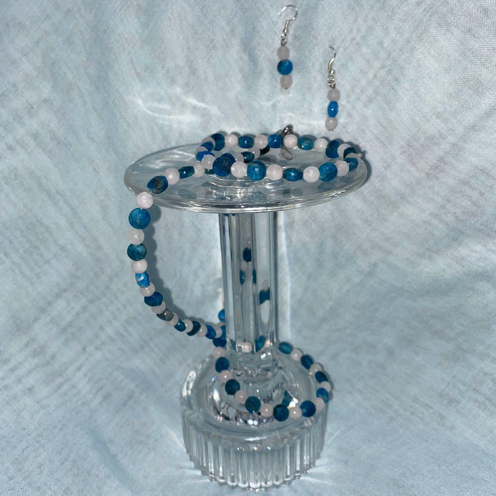
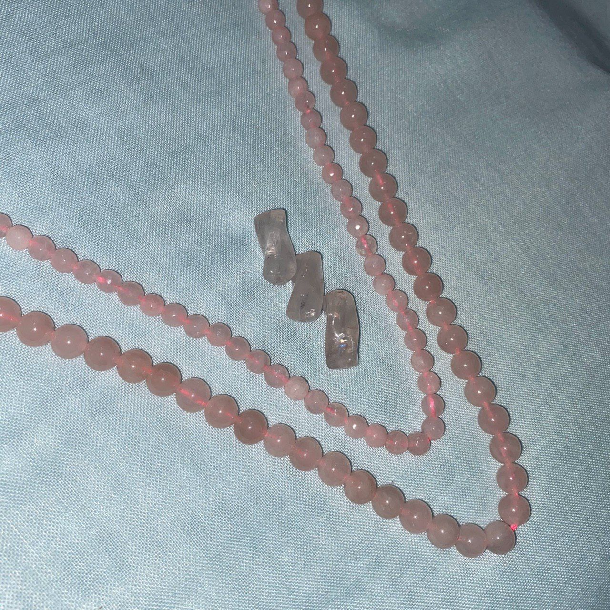

ست کامل کوارتز صورتی و لاجورد
ایجاد آرامش از ویژگیهای کوارتز صورتی میباشد که با خاصیت رنگ آبی زیبای لاجورد همخوانی دارد.

این ست کامل که شامل گردنبد، دستبند، گوشواره میشود از دو سنگ کوارتز صورتی و چشم ببر درست شدهاست.
در ادامه به معرفی کوتاهی از این دو سنگ میپردازیم:

کوارتز صورتی
- ابتدا مهم است بدانیم که این سنگ، سنگ ماههای اردیبهشت، خرداد، مرداد، مهر، بهمن است.
- صورتی بودن رنگ این سنگ از منگنز است و بهخاطر رنگ ملایم این سنگ ناراحتیها و نگرانیها را از بین میبرد.
- برای قلب، گردش خون و مجراهای خونی بسیار موثر است و درمان زخمها را آسانتر میکند.
- همچنین کمک به حل مشکلات بیخوابی و افسردگی میکند.
- اینها گوشهای از ویژگیهای جذاب این سنگ زیباست.
لاجورد

- ابتدا مهم است بدانیم که این سنگ، سنگ ماههای اردیبهشت، آذر، بهمن است.
- این سنگ توده آبیرنگ شاهانهای است که از مواد گوناگون گروه سودالیت به همراه رگههای پیریت تشکیل میشود و ماده رنگی موجود در آن از لازوریت، کلسیت و پیریت است.
- رنگ آبی این سنگ اثر آرامشبخش دارد و گرفتگی عضله را از بین میبرد
- همچنین این سنگ به عنوان سنگ عشق و دوستی مشهور است.
- اینها گوشهای از ویژگیهای جذاب این سنگ زیباست.
کوارتز صورتی
مروری بر خواص، نکات و ویژگیهای سنگ کوارتز صورتی
لاجورد
مروری بر خواص، نکات و ویژگیهای سنگ لاجورد